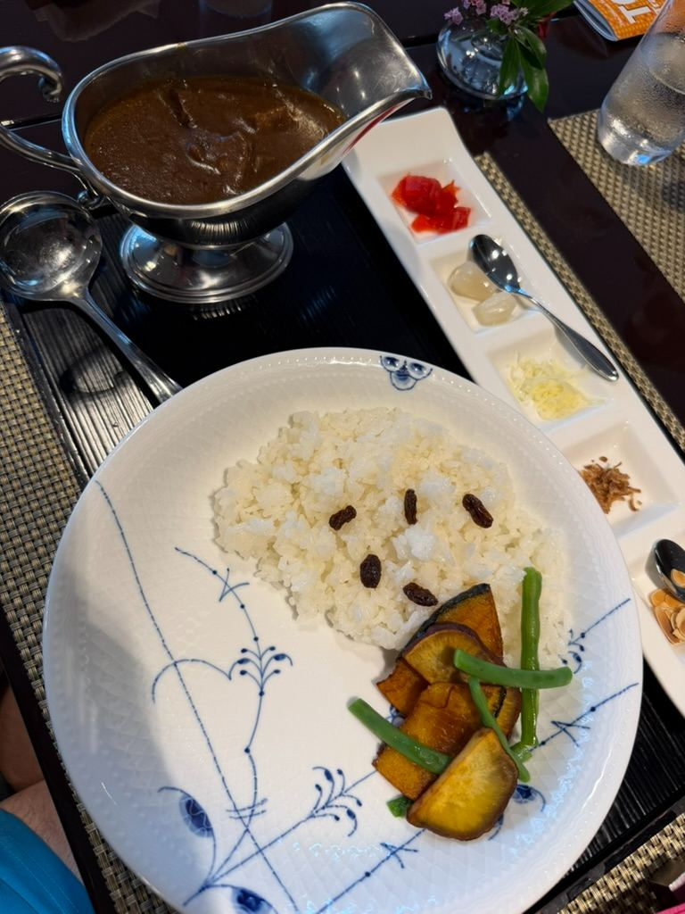
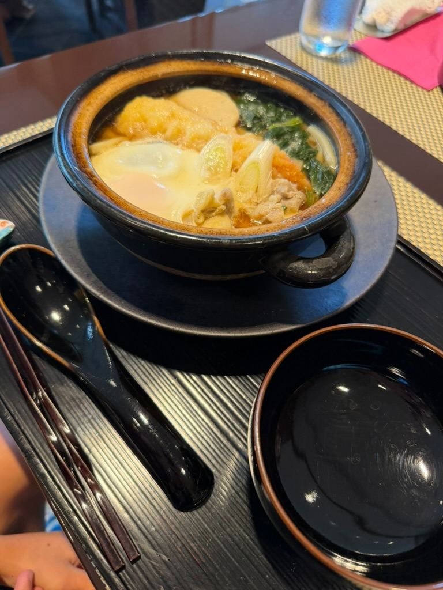
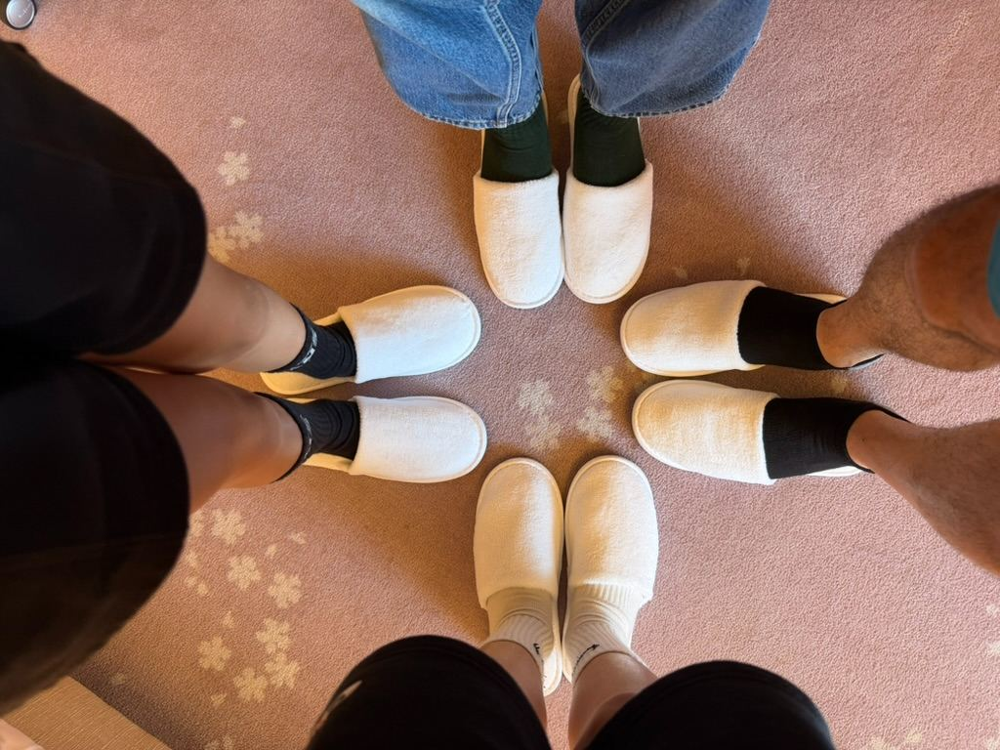
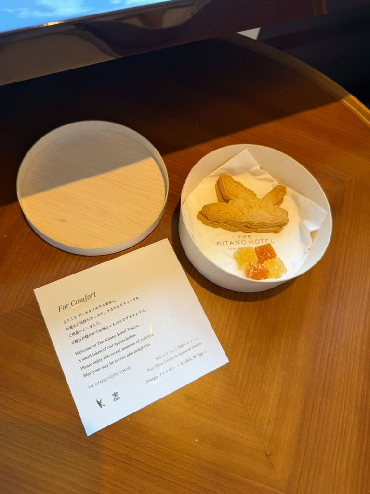

Our First Trip to Tokyo: Staying at The Kitano Hotel & Lunch at Tea Lounge Cafe





Making our very first trip up to Tokyo from Yokosuka was a huge milestone for us! The city is so vibrant and fast-paced, but staying at The Kitano Hotel Tokyo gave us the perfect, relaxing base to take it all in. One of the best parts of the experience was sitting down for lunch right at the hotel’s Tea Lounge Cafe.
When everyone in the family is craving a different Japanese comfort dish, finding a spot that nails every single one is a major win—and this place delivered on every front.
🍛 Our First Tokyo Lunch Spread
We decided to sample a little bit of everything off the menu:
1. Chicken Teriyaki Over Rice Set
Served with savory miso soup and crisp Japanese pickles, this bowl featured tender, perfectly glazed chicken stacked high over hot rice and topped with finely shredded scallions. Rich, sweet, and pure comfort.
2. Original Wagyu Beef Curry KITANO
A beautifully presented classic Japanese curry set. The rich, dark curry gravy arrived in a traditional gravy boat alongside a dish of fragrant rice garnished with raisins, accompanied by fried sweet potato, green beans, and an assortment of toppings like pickled scallions, fried onions, and garlic flakes.
3. Udon Noodle Hot Pot
A steaming clay pot (donabe) packed with thick udon noodles, rich broth, greens, scallions, a poached egg, and crispy tempura toppings. Nothing beats the cozy feeling of a bubbling hot pot dish served right to the table!
📋 Menu Highlights
If you ever find yourself visiting The Kitano Hotel, here is a quick snapshot of what the Tea Lounge Cafe offers:
- Rich Options: Original Wagyu Beef Curry KITANO, Chicken Teriyaki Rice Set, and Tantan Noodles.
- Hot Pot & Soups: Udon Noodle Hot Pot and Tada's Kake Somen.
- Lighter Bites: Onigiri sets, taco rice salad, and fresh greens.
What is your favorite dish to order on your first visit to a new city—are you team Curry, Hot Pot, or Teriyaki? Let us know in the comments below!